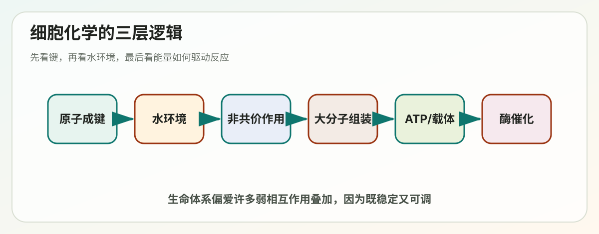
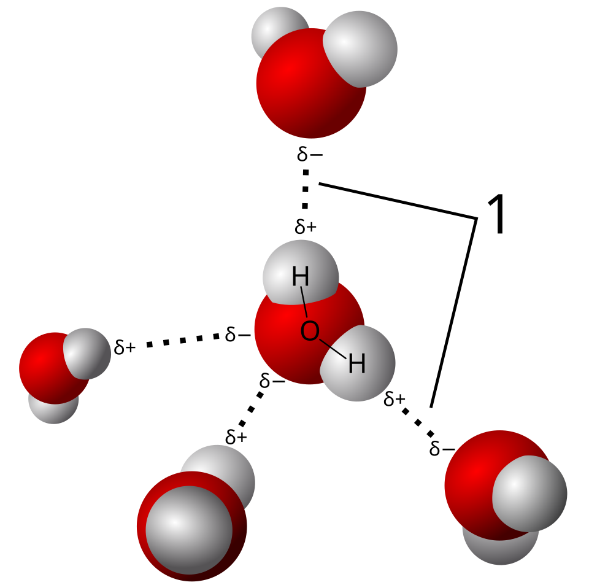

Lecture 02
第2讲学习讲义：Cell Chemistry


对应课件：Lecture_2_Cell_Chemistry.pdf
这一讲是后面所有内容的化学地基。你如果觉得 DNA、RNA、蛋白质很抽象，通常不是生物学没学懂，而是化学基础没串起来。
这讲最核心的目标只有一句话：理解生物分子为什么能形成特定结构、彼此识别，并驱动生命反应。
这讲的总框架
课件分成三部分：
- 共价键与非共价相互作用。
- 细胞的化学构件。
- 生物化学能量学。
你可以把它理解成三个层次：
- 分子是怎么连起来的。
- 细胞是拿什么材料搭起来的。
- 这些材料怎么在能量驱动下动态运转。
一、原子与成键：生物大分子的最底层逻辑
1. 原子是什么
原子是保留元素化学性质的最小单位。
基本组成：
- 质子：带正电。
- 中子：不带电。
- 电子：带负电。
真正决定化学反应特性的，主要是电子，尤其是最外层电子。
2. 为什么原子会成键
本质原因是：原子倾向于达到更稳定、能量更低的电子排布。
它们可以通过：
- 共享电子。
- 转移电子。
来实现稳定。
3. 生物体为什么主要由少数元素构成
生物体大量由 C、H、O、N 等元素构成，原因在于：
- 碳可以形成稳定且多样的骨架。
- 氢和氧参与水、酸碱、氢键等过程。
- 氮常出现在氨基、碱基中。
- 磷对于核酸和能量代谢尤其重要。
二、共价键与离子键：先理解“强连接”
1. 共价键 covalent bond
共价键是原子通过共享电子形成的键。
特点：
- 比较稳定。
- 定义了分子的基本骨架。
- 生物大分子的主链大多靠共价键连接。
例如：
- 蛋白质中氨基酸之间的肽键。
- DNA/RNA 中核苷酸之间的磷酸二酯键。
- 脂质和糖中的很多骨架连接。
2. 离子键 ionic bond
离子键来自电子转移后正负离子之间的静电吸引。
在生物体系中要注意一点：
- 在干燥环境下，离子键可以很强。
- 在水溶液中，离子之间的相互作用会被水显著削弱。
所以生物体系中的相互作用一定要结合环境来理解。
三、非共价相互作用：生命精细结构和识别的关键
初学者最容易低估非共价作用，因为它们单个看起来弱，但生命系统大量依赖它们的“多点协同”。
1. 氢键 hydrogen bond
典型例子：
- DNA 碱基配对。
- 蛋白质二级结构中的主链稳定。
- 水分子之间的相互作用。
要点：
- 氢键单个不如共价键强。
- 但多个氢键同时存在时，可以非常有方向性和特异性。
2. 范德华力 van der Waals interaction
这是分子间极近距离接触时由瞬时偶极等产生的弱相互作用。
特点：
- 单个非常弱。
- 需要距离非常接近。
- 大量原子同时贴合时，总效应可以很重要。
3. 静电相互作用 electrostatic interaction
带正电和带负电基团之间会互相吸引。
例如：
- 蛋白质侧链之间。
- 蛋白质与 DNA 之间。
DNA 带负电，因此很多 DNA 结合蛋白往往富含带正电氨基酸区域。
4. 疏水效应 hydrophobic effect
课件把它称为生物分子折叠中“第四种重要效应”。
更准确地说：
- 水分子更喜欢与自己形成有序氢键网络。
- 非极性分子暴露在水中会打乱这种网络。
- 因此非极性基团倾向于聚在一起，减少与水接触面积。
它的重要后果包括：
- 蛋白质折叠时疏水侧链常埋入内部。
- 磷脂在水中自发形成膜双层。
- 分子识别中常见疏水口袋。
四、水为什么对生命如此特殊
1. 水是极性分子
因为氧吸电子能力更强，导致：
- 氧一侧带部分负电。
- 氢一侧带部分正电。
这让水分子之间可以形成大量氢键。
2. 水为什么是优良溶剂
因为它能：
- 包围带电离子。
- 稳定极性分子。
- 削弱许多静电吸引。
这就是为什么细胞中的大多数生化反应都在水相中进行。
3. 水的流动性为什么重要
水分子间氢键不是永久固定，而是在不断断裂和重建。这使得水既有较强内聚性，又保持良好流动性。
4. 水会改变键的“实际表现”
例如：
- 离子间吸引常被水削弱。
- 疏水效应在水中反而变得更重要。
五、分子互补性：为什么“形状合适”还不够
两个大分子如果表面互补，就可以发生结合。这里的“互补”至少包括三层：
- 形状互补。
- 电荷互补。
- 氢键供体和受体位置互补。
例如酶与底物、抗体与抗原、转录因子与 DNA，都是靠这些因素共同决定识别。
六、细胞的化学构件：四大类核心分子
1. 糖 sugars
主要功能：
- 提供快速能量。
- 作为碳骨架来源。
- 构成多糖。
- 参与细胞识别和修饰。
常见理解点：
- 单糖是基本单位。
- 多糖是储能或结构材料。
- 糖类上的羟基很多，所以往往亲水。
2. 脂肪酸与磷脂
脂肪酸通常包含：
- 一条长的疏水烃链。
- 一个亲水羧基。
磷脂进一步具有：
- 亲水头部。
- 疏水尾部。
这类兼具亲水和疏水的分子叫两亲性分子。它们在水中会自组装成膜。
3. 氨基酸与蛋白质
氨基酸是蛋白质的基本单元。
每个氨基酸都至少有：
- 氨基。
- 羧基。
- 一个氢。
- 一个可变的侧链 R 基团。
真正决定氨基酸差异的是侧链。
按性质大致可以分成：
- 非极性。
- 极性不带电。
- 带正电。
- 带负电。
4. 核苷酸与核酸
核苷酸由三部分组成：
- 含氮碱基。
- 五碳糖。
- 磷酸。
它们不仅构成 DNA 和 RNA，还承担能量和信号功能。
例如：
- ATP 是能量货币。
- GTP 参与信号与蛋白合成。
- cAMP 是信号分子。
七、肽键与核酸主链：生物大分子如何“串起来”
1. 肽键 peptide bond
氨基酸之间通过缩合反应形成肽键。
重要性在于：
- 蛋白质一级结构本质上就是氨基酸序列。
- 肽键具有部分双键性质，因此相对刚性。
2. 核酸中的磷酸二酯键
DNA 和 RNA 的核苷酸通过磷酸二酯键连接成链。
这使核酸具有方向性：
- 一端是 5'。
- 另一端是 3'。
八、碱基配对：从化学到遗传信息
碱基之间通过氢键配对：
- A 和 T 配对。
- G 和 C 配对。
在 RNA 中，T 通常换成 U。
为什么这件事重要：
- 让遗传信息可复制。
- 让突变、修复、识别有了物理基础。
- 让 PCR、杂交、测序等技术成立。
九、ATP：短期能量货币，不是“万能电池”
你要理解三点：
- ATP 不等于细胞全部能量来源。
- ATP 是最常用的直接能量交换媒介。
- 它常把放能反应与吸能反应耦联起来。
例如：
- 主动运输要用 ATP。
- 生物合成常借 ATP 驱动。
- 肌肉收缩需要 ATP。
十、生物化学能量学：什么叫自由能
1. 自由能 G
自由能可以粗略理解为“在特定条件下可用于做功的能量”。
反应方向常看自由能变化 ΔG：
- ΔG < 0：反应倾向自发进行。
- ΔG > 0：反应本身不自发，需要能量输入。
2. 细胞怎么让“不想发生”的反应发生
靠耦联 coupling。
也就是：
- 把一个吸能反应与一个更强的放能反应绑在一起。
- 总和变成有利。
3. 分解代谢与合成代谢
- 分解代谢 catabolism：把大分子拆小，释放能量。
- 合成代谢 anabolism：把小分子组装成大分子，消耗能量。
十一、活化载体 activated carrier：细胞不是直接“拿能量硬推”
细胞会把能量暂时装在一些可转移的化学形式中，这些就叫活化载体。
常见包括：
- ATP：转移磷酸基。
- NADH、NADPH：转移高能电子。
- Acetyl-CoA：转移乙酰基。
理解这个概念特别重要，因为代谢并不是一锅乱炖，而是通过这些“化学货币”实现模块化传递。
十二、酶：为什么细胞反应能又快又准
酶是生物催化剂。
你必须记住：
- 酶不改变反应的最终平衡。
- 酶通过降低活化能提高反应速率。
- 酶通常对底物和反应类型高度特异。
酶强大的根本原因是：
- 它能稳定过渡态。
- 它能提供合适微环境。
- 它能让反应基团在空间上精准靠近。
十三、把这一讲串成一幅图
最底层是原子和电子决定成键方式。
成键方式决定了：
- 分子骨架是否稳定。
- 分子是否亲水或疏水。
- 分子是否带电。
- 分子是否能与其他分子特异结合。
这些化学性质进一步决定：
- 糖、脂质、蛋白质、核酸分别适合做什么。
- 膜如何形成。
- DNA 如何存储信息。
- 蛋白质如何折叠和识别。
- 细胞如何通过 ATP 和其他载体组织能量流。
十四、常见误区
- “化学键强就一定最重要”是错的。生命系统很多关键特异性来自大量弱相互作用。
- “疏水作用就是疏水分子互相吸引”不够准确，更本质是水环境驱动。
- “ATP 储存了身体所有能量”是错的，它更像周转很快的短期能量货币。
- “酶能让不可能的反应变成可能”不准确。酶主要是加速热力学允许的反应，或配合耦联让总体可行。
十五、你必须会的关键词
- Covalent bond：共价键。
- Ionic bond：离子键。
- Hydrogen bond：氢键。
- van der Waals interaction：范德华力。
- Hydrophobic effect：疏水效应。
- Complementarity：互补性。
- Peptide bond：肽键。
- Nucleotide：核苷酸。
- Free energy：自由能。
- Activated carrier：活化载体。
- Enzyme：酶。
十六、自测题
1. 为什么非共价相互作用对生命系统非常重要？
答题关键：
- 虽弱但数量多。
- 可逆。
- 赋予特异识别与动态调控。
2. 为什么磷脂能自发形成膜？
答题关键：
- 两亲性。
- 疏水尾避水，亲水头朝向水。
3. ATP 在细胞中的核心角色是什么？
答题关键：
- 作为短期能量货币。
- 耦联放能和吸能反应。
4. 酶为什么能提高反应速率？
答题关键：
- 降低活化能。
- 稳定过渡态。
十七、考前速记版
- 生物分子骨架主要靠共价键，精细识别大量依赖非共价作用。
- 水是生命化学环境的核心。
- 糖、脂、蛋白、核酸是四大化学构件。
- 疏水效应驱动膜形成和蛋白折叠。
- ATP 和其他活化载体负责组织能量流。
- 酶通过降低活化能加速反应。
十八、深入扩展：为什么生命体系偏爱“弱相互作用叠加”
这是一条很重要的化学直觉。
如果生命系统主要靠特别强、特别死板的共价键来实现所有识别，会有什么问题？
- 难以快速解离。
- 难以动态调控。
- 难以形成可逆组装。
而弱相互作用的好处是：
- 单个弱，但多个一起可以很稳。
- 需要时又能拆开。
- 对环境变化更敏感，适合调控。
这就是为什么：
- DNA 双链靠氢键配对而不是碱基之间永久共价连接。
- 蛋白质与配体识别大量依赖非共价作用。
- 膜能自组装又能保持流动。
十九、pH 和离子环境为什么会影响生物分子行为
虽然课件没有大篇幅展开 pH，但你学细胞化学时最好把这个直觉建立起来。
很多基团是否带电，取决于环境 pH。于是 pH 会影响：
- 蛋白质表面电荷。
- 酶活性位点状态。
- 分子间静电相互作用。
- 溶解性和折叠状态。
这也是为什么：
- 溶酶体的低 pH 适合某些水解酶工作。
- 不同细胞器有不同化学环境。
二十、为什么 ATP 特别适合作为能量货币
一个好能量货币至少要满足：
- 容易生成。
- 容易被识别。
- 能量足够但又不至于太危险。
- 可以和很多不同反应耦联。
ATP 之所以成功，是因为：
- 水解释放的自由能适中。
- 磷酸基团转移通用性强。
- 几乎所有细胞都围绕它建立代谢接口。
你可以把 ATP 理解成“统一通用结算货币”，而不是“唯一财富来源”。
二十一、为什么细胞需要 activated carriers，而不是每次都直接把糖烧掉
如果每个反应都直接和葡萄糖氧化强行绑定，代谢会非常混乱，也很难精细控制。
活化载体的价值是：
- 把大能量变化拆成很多可控小步骤。
- 让不同通路共享统一中间货币。
- 让能量、电子、化学基团的转移模块化。
因此代谢网络的本质不是“烧东西”，而是“用一套标准化化学货币做精细转账”。
二十二、如果你要真正理解第 2 讲，最推荐的记忆方式
不要把它当成化学名词表，而要把它当成一条因果链：
- 原子和成键方式决定分子性质。
- 分子性质决定它能否溶于水、能否折叠、能否识别别人。
- 这些性质再决定糖、脂、蛋白和核酸为什么分别适合不同任务。
- 最后由 ATP 和其他载体把这些分子组织成动态生命过程。
只要这条链顺了，第 2 讲就不会再散。